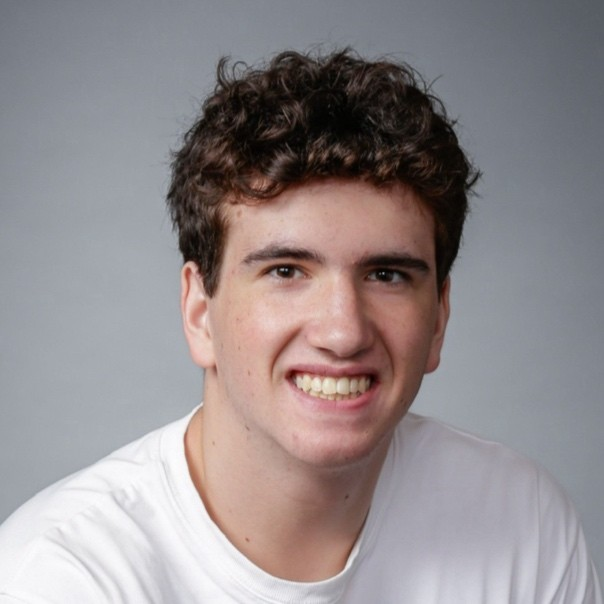
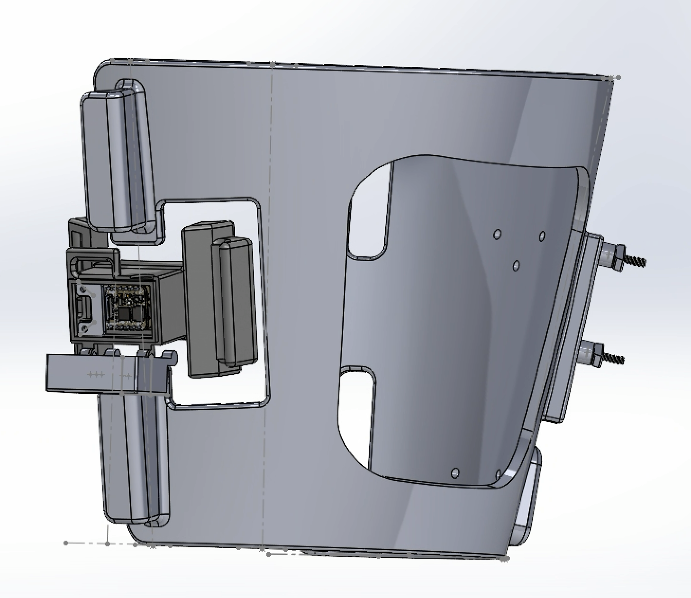
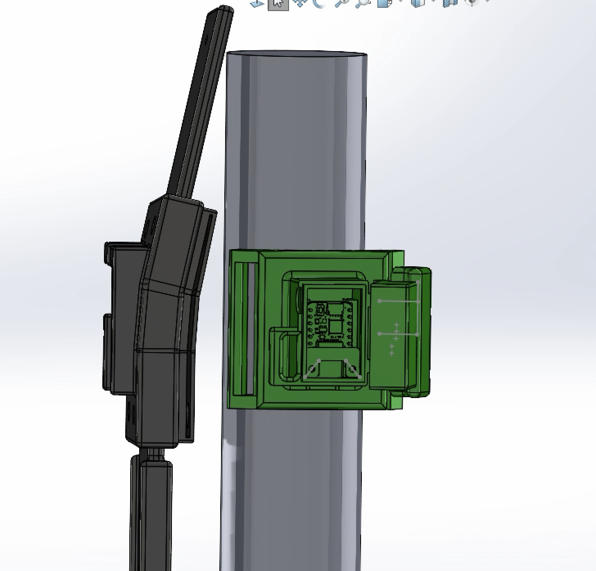
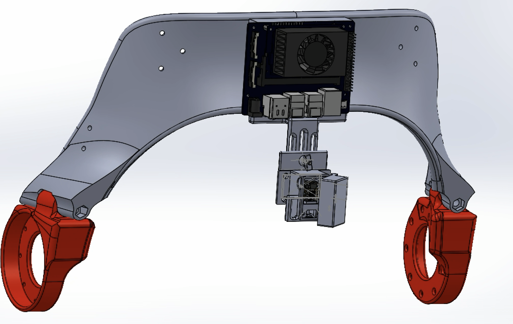
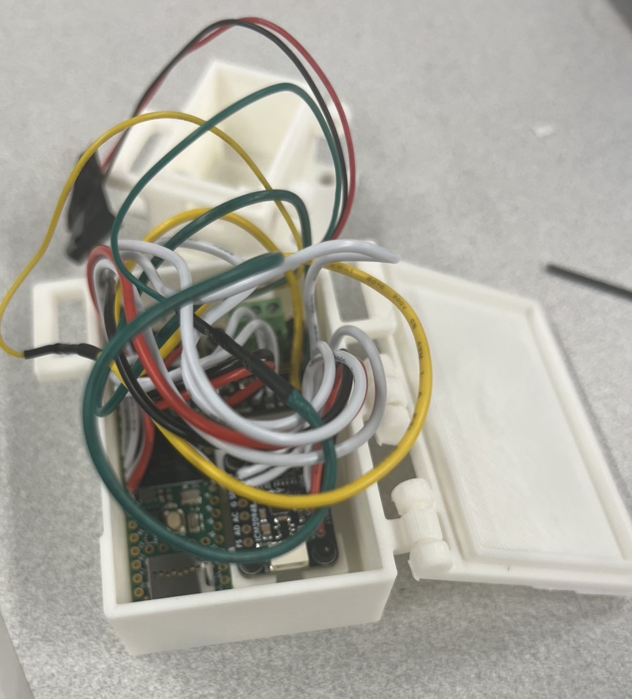
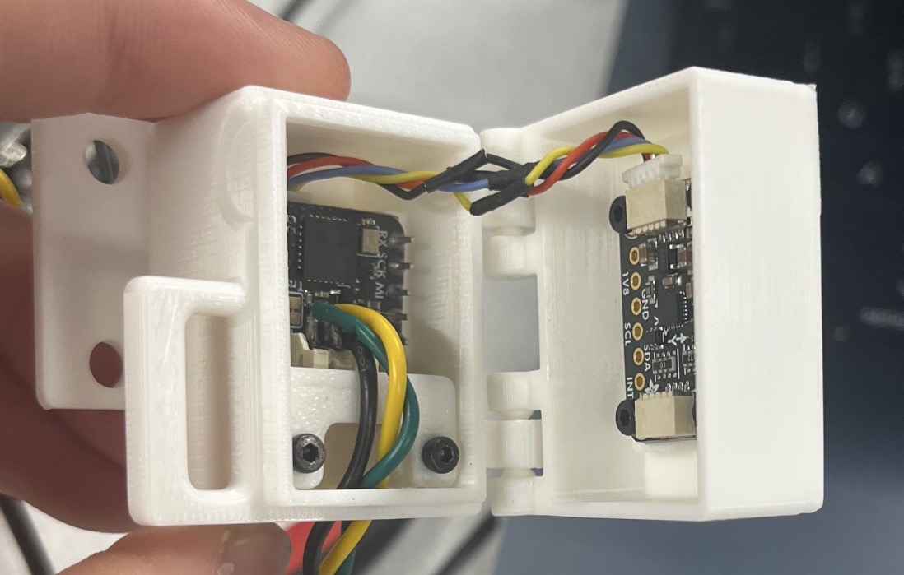

Personal project
In progress
Adaptive Meal-Assist Robotic Arm
Assistive feeding-arm concept developed through CAD, degree-of-freedom planning, and torque analysis.
Mechanical engineering + robotics
B.S. Mechanical Engineering · Robotics Minor · Carnegie Mellon University
Born with Pierre Robin sequence, a craniofacial difference, I know firsthand how life-saving surgery and thoughtful design can change a life. Engineering is how I want to turn that urgency into actionable change.

Researching whether adjustable IMU sensing units across people with different body sizes enable more consistent sensing and more transferable algorithms.





Compact electronics packaging for modular sensor, compute, and wiring hardware.
View project
Adjustable mechanical interface between the knee and hip exoskeleton platforms.
View project
Fit, clearance, and repeatable attachment checks before full system integration.
View projectAutomated reporting, web scraping, and recruiting workflows for business operations.
View project
Automated gas-pressure control prototype for critical stem-cell storage infrastructure.
View project
Assistive feeding-arm concept developed through CAD, degree-of-freedom planning, and torque analysis.

Fast collaborative fabrication, mechanical installations, and creative projects built under tight constraints.
Get in touch
Open to research, internship, and build collaborations in robotics and mechanical design.